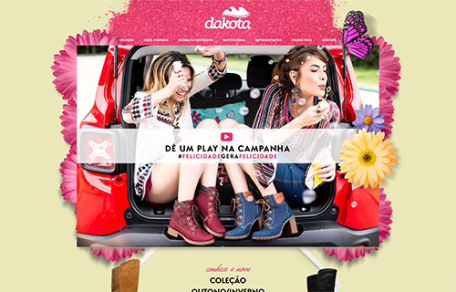

Dakota
A partir da coleção primavera verão 2015, o site da Dakota se modernizou, de forma que pudesse interagir melhor com seu público. A partir de lá, produzimos dois sites e um hot site promocional todo interligado com lojas virtuais para facilitar a busca pelo sapato perfeito. O Hot Site, lançado em agosto de 2015 para promover a coleção primavera-verão, puxava fotos do Facebook do visitante e gerava um vídeo interativo, que podia ser compartilhado, onde o usuário contracenava com a atriz Maria Casadeval.
